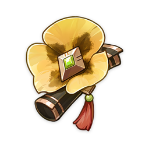

Genshin Impact · Versión 7.2
Análisis del Rol y Escalado
Furina es un personaje de elemento Hydro originario de Fontaine que utiliza Espada Ligera y se posiciona en el tier T0.5 (S) Sub-DPS dentro del rol de Sub-DPS & Buffer Universal Hydro (Fanfarria de Daño%). Su rendimiento en combate gira en torno a este eje principal: Sus pasivas escalan hasta 40,000 Vida mientras mantiene alto daño off-field y Recarga.
Para maximizar su aporte en el equipo, la configuración prioritaria combina Fulgor de las Aguas Calmas con el conjunto de artefactos Golden Troupe (4 piezas), respetando la jerarquía de estadísticas Recarga de Energía (180%+ Solo) > Vida% (hasta 40k) > Prob. Crítica = Daño Crítico. y subiendo sus habilidades en orden: Definitiva (Q) = Habilidad Elemental (E) >>> Ataques Normales.
Mejores Armas
Opciones recomendadas ordenadas por rendimiento según el meta actual y compatibilidad con sus rotaciones:
-
 Fulgor de las Aguas Calmas ★★★★★BiS Firma542 ATQ base, 88.2% Daño Crítico; +24% Daño Skill y +28% Vida cuando varía la Vida del equipo.
Fulgor de las Aguas Calmas ★★★★★BiS Firma542 ATQ base, 88.2% Daño Crítico; +24% Daño Skill y +28% Vida cuando varía la Vida del equipo. -
 Llave de la Coronación ★★★★★Alternativa 5★542 ATQ base, 66.2% Vida%; ayuda a capear 40k HP y reparte Maestría Elemental al equipo.
Llave de la Coronación ★★★★★Alternativa 5★542 ATQ base, 66.2% Vida%; ayuda a capear 40k HP y reparte Maestría Elemental al equipo. -
 Cortador de Jade Primordial ★★★★★Alternativa Crít542 ATQ base, 44.1% Prob. Crítica; +20% Vida y facilita balancear 70/180+ Crít.
Cortador de Jade Primordial ★★★★★Alternativa Crít542 ATQ base, 44.1% Prob. Crítica; +20% Vida y facilita balancear 70/180+ Crít. -
 Deseo Ponzoñoso ★★★★Mejor 4★ Evento510 ATQ base, 45.9% RE; +32% Daño Skill y +12% Prob. Crítica de Skill.
Deseo Ponzoñoso ★★★★Mejor 4★ Evento510 ATQ base, 45.9% RE; +32% Daño Skill y +12% Prob. Crítica de Skill. -
 Vado del Río Ceniciento ★★★★Mejor F2P Pesca510 ATQ base, 45.9% RE; +16% Prob. Crítica de Skill y +32% RE temporal tras usar E.
Vado del Río Ceniciento ★★★★Mejor F2P Pesca510 ATQ base, 45.9% RE; +16% Prob. Crítica de Skill y +32% RE temporal tras usar E.
Mejores Sets de Artefactos
Combinaciones de 4 piezas o mezclas de 2 piezas para maximizar su contribución:
-
 Golden Troupe (4 piezas) BiS Absoluto
Golden Troupe (4 piezas) BiS Absoluto+20% Daño Skill (2p) y +50% adicional off-field para sus tres invocaciones.
-

Tenacity of the Millelith (4 piezas) Alternativa Buffer+20% Vida y +20% ATQ constante para carries escalados en ATQ.
Estadísticas Principales y Secundarias
Atributos prioritarios en artefactos para un balance óptimo de daño o soporte:
| Pieza | Estadística Principal |
|---|---|
| Reloj (Arenas) | Vida% / Recarga de Energía |
| Cáliz | Vida% / Bono Daño Hydro |
| Corona | Prob. Crítica / Daño Crítico |
Prioridad de Subestadísticas
- Recarga de Energía (180%+ Solo) > Vida% (hasta 40k) > Prob. Crítica = Daño Crítico.
Prioridad de Talentos
Definitiva (Q) = Habilidad Elemental (E) >>> Ataques Normales
Objetivos de Estadísticas (Nivel 90)
Valores de referencia verificados para evaluar el equipamiento de Furina en nivel 90 con artefactos de 5 estrellas:
| Atributo | Meta Recomendada |
|---|---|
| Vida | 35,000 – 40,000 HP |
| Ataque | 1,100 |
| Defensa | 750 |
| Maestría Elemental | 0 |
| Recarga de Energía | 180%+ (Solo) / 140%–160% (Doble Hydro) |
| Balance Crítico | 60% – 80% CR / 160% – 200%+ CD |
Talentos de Combate y Materiales (Nivel 1 al 10)
Habilidades principales de Furina y desglose exacto de libros, materiales y Mora para mejorar sus talentos:


Composiciones de Equipo Recomendadas
Alineaciones con mayor sinergia elemental y amplificación de daño en el Abismo y Teatro Fantasía:
Skirk Freeze Premium
Skirk • Escoffier • Furina • Vodyanitsa
Con Vodyanitsa y Escoffier maximiza Fanfarria y bonifica al máximo a Skirk.
Neuvillette Freeze Hipercarry
Neuvillette • Escoffier • Furina • Vodyanitsa
Sinergia clásica Hydro con Vodyanitsa y Escoffier.
Materiales de Ascensión (Nivel 1 al 90)
Recursos totales requeridos para desbloquear las 6 fases de ascensión de Furina. Coste total de Mora en ascensiones: 420.000 Mora.


Sinergias y Guías Relacionadas
Explora las fichas de armas, artefactos y materiales de los principales compañeros de equipo para Furina: